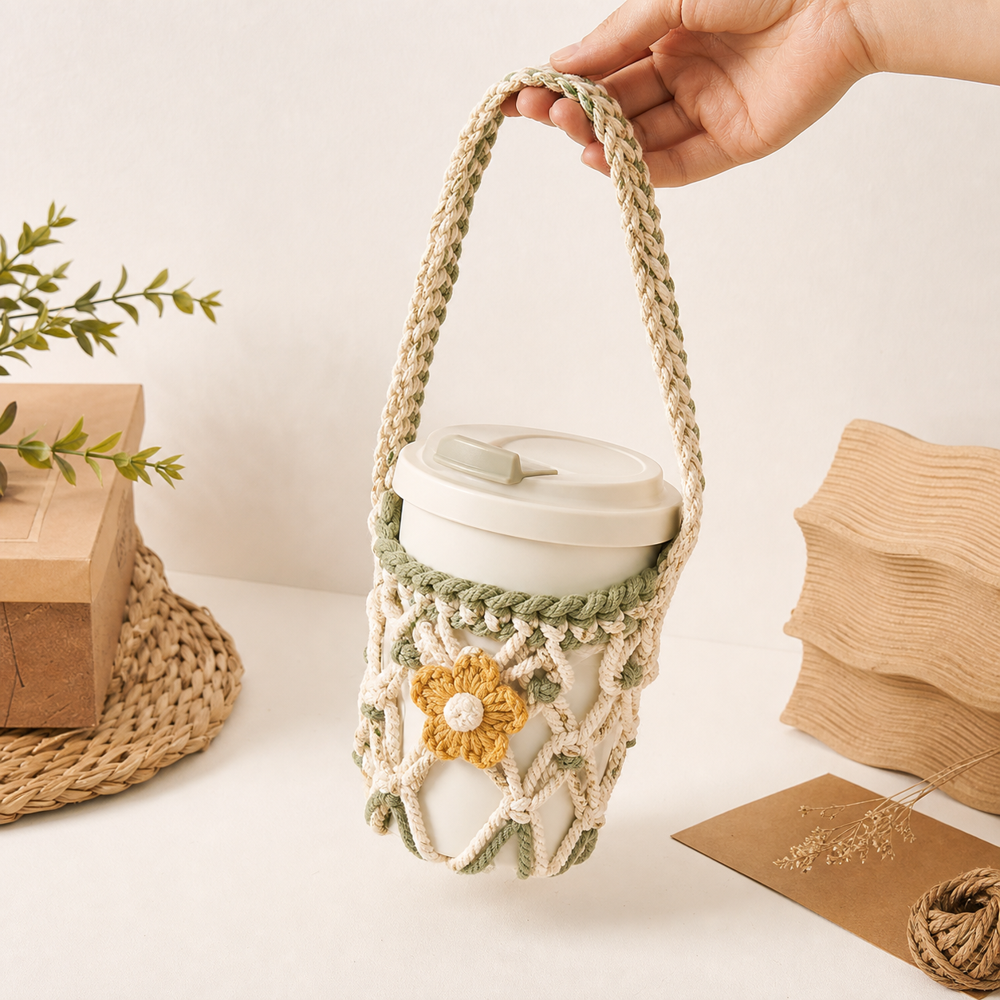
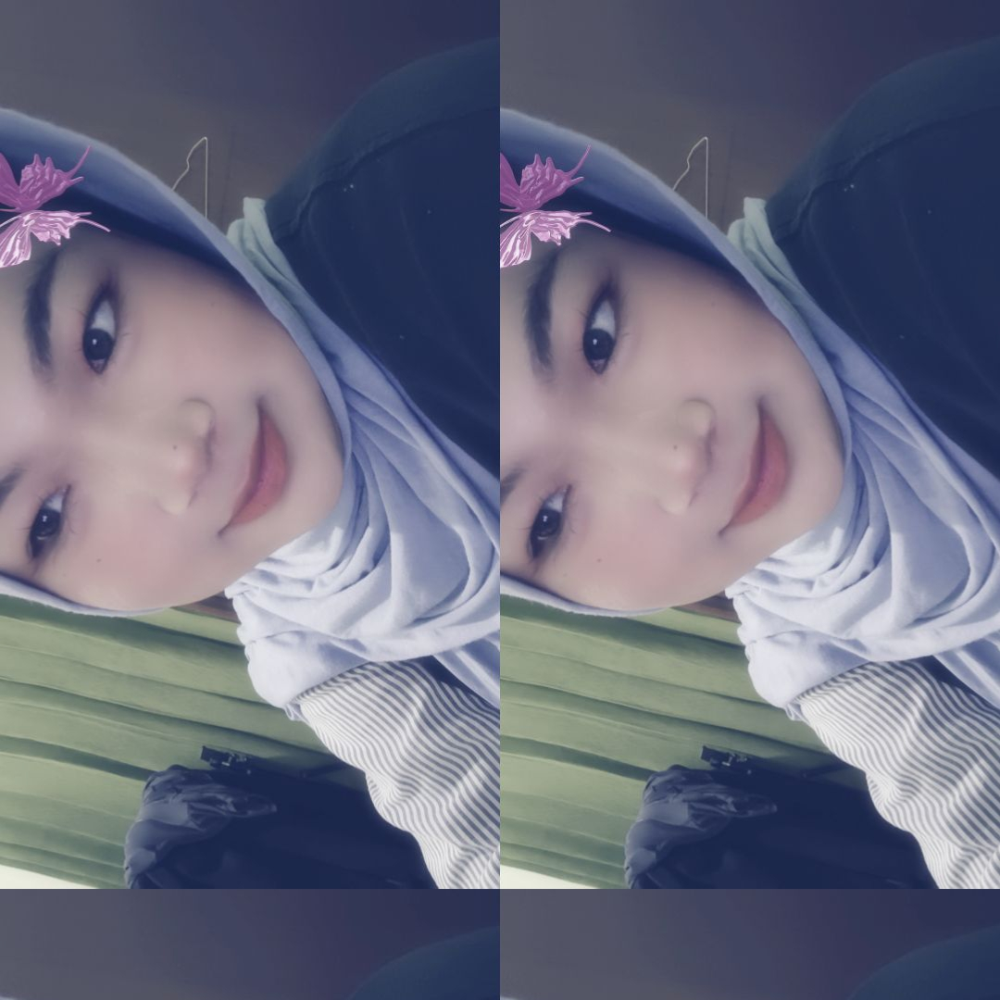

Edukasi Sampah Plastik
Memberikan gambaran tentang dampak sampah plastik bagi tanah, sungai, laut, dan kesehatan.
Jelajahi Bersama Kami
Website ini mengajak pengguna untuk memahami isu lingkungan, khususnya sampah plastik, serta memulai perubahan kecil yang dapat berdampak besar bagi bumi.
Tujuan
Website dan Produk kami disusun agar mudah dipahami pelajar, komunitas muda, dan siapa pun yang ingin mulai hidup lebih ramah lingkungan.
Memberikan gambaran tentang dampak sampah plastik bagi tanah, sungai, laut, dan kesehatan.
Meningkatkan kepedulian terhadap pencemaran lingkungan yang sering muncul dari kebiasaan sehari-hari.
Mengajak pengguna menerapkan kebiasaan sederhana yang bisa dilakukan tanpa terasa berat.
Mengenalkan Reduce, Reuse, dan Recycle sebagai langkah praktis mengurangi sampah.
Menyediakan contoh video edukasi, fitur pencarian ramah lingkungan, dan inspirasi produk eco-friendly.
Plastic Facts
Plastik sekali pakai sering hanya digunakan beberapa menit, namun dapat bertahan di lingkungan dalam waktu yang sangat lama.
Beberapa jenis plastik membutuhkan waktu sangat lama untuk terurai secara alami.
Data SIPSN/KLH 2025 yang terinput menunjukkan plastik menjadi salah satu komposisi sampah terbesar di Indonesia.
Kantong, sedotan, dan kemasan sekali pakai menjadi penyebab utama pencemaran plastik.
Sampah plastik dapat mencemari laut, tertelan hewan, dan merusak rantai makanan.
Infographic
Ilustrasi berdasarkan data komposisi sampah nasional SIPSN/KLH 2025 yang terinput. Angka dapat berubah mengikuti pembaruan laporan daerah.
Catatan: data 2025 bersifat terinput/indikatif dan berasal dari daerah yang sudah melaporkan data ke sistem nasional. Total timbulan yang terdata sekitar 24,8 juta ton per tahun dari 244 kabupaten/kota pelapor.
Lihat sumber data SIPSN/KLH 2025Plastik yang tercecer dapat menyumbat drainase, memperburuk banjir, dan menurunkan kualitas tanah.
Hewan dapat terjebak atau mengira plastik sebagai makanan, terutama di wilayah pesisir dan laut.
Mikroplastik dan pembakaran sampah yang tidak aman dapat memengaruhi kualitas udara, air, dan pangan.
Eco Education
Konsep 3R membantu kita memilih, memakai, dan mengelola barang dengan lebih bijak.
Kurangi pemakaian barang sekali pakai sebelum sampahnya muncul.
Gunakan kembali barang yang masih layak agar usia pakainya lebih panjang.
Pilah dan olah sampah agar materialnya dapat kembali bermanfaat.
Sustainable Lifestyle
Langkah kecil yang dilakukan banyak orang dapat menjadi dampak besar untuk bumi.
Video Education
Gunakan pencarian di bawah untuk menyaring video berdasarkan judul atau kategori yang tersedia di website ini.
Mengenal perjalanan plastik setelah dibuang dan kenapa kita perlu menguranginya.
Inspirasi kebiasaan kecil yang bisa diterapkan dari rumah, sekolah, atau kampus.
Belajar mengurangi sampah dari pilihan belanja, makan, dan membawa perlengkapan sendiri.
Eco Search
Gunakan Ecosia untuk mencari informasi sambil mendukung mesin pencari yang lebih peduli terhadap lingkungan.
Our Product
Cup Holder Strap adalah tali rajut handmade untuk membawa tumbler atau gelas minuman dengan lebih praktis, manis, dan ramah lingkungan.

4P
Ditujukan untuk pelajar, mahasiswa, dan pengguna tumbler yang ingin membawa minuman dengan cara praktis sekaligus tetap peduli lingkungan.
Dibuat melalui proses pemilihan tali, rajutan tangan, pengecekan ukuran gelas, uji kekuatan tali, lalu finishing agar rapi dan nyaman dipakai.
Dipublikasikan lewat poster digital, konten media sosial, demo booth, dan cerita singkat tentang manfaat membawa tumbler sendiri.
Produk utama berupa Cup Holder Strap handmade yang ringan, reusable, estetik, dan dapat menjadi aksesoris minuman harian.
Photobooth
Pilih frame dengan gaya berbeda, nyalakan kamera, dan unduh hasil polaroid bertema lingkungan yang unik dan siap dibagikan.
Pilih frame & layout, lalu nyalakan kamera.
Eco Game
Mainkan visual novel interaktif ini untuk menguji kemampuan investigasimu. Temukan petunjuk, interogasi tersangka, dan selamatkan lingkungan taman kota.
Sebuah visual novel edukasi lingkungan
About Us
Website ini dibuat sebagai media edukasi digital untuk mengajak generasi muda lebih sadar, peduli, dan berani memulai perubahan kecil demi lingkungan yang lebih baik.

NPM 10524005
“Menurut saya, isu lingkungan di Indonesia perlu lebih sering dibahas karena dampaknya sudah terasa dalam kehidupan sehari-hari, terutama masalah sampah dan polusi.”

NPM 10524050
“Saya percaya perubahan kecil seperti mengurangi plastik sekali pakai bisa menjadi langkah awal untuk membantu menjaga lingkungan.”

NPM 10524039
“Isu lingkungan bukan hanya tanggung jawab pemerintah, tetapi juga tanggung jawab kita sebagai generasi muda untuk mulai peduli.”

NPM 10524464
“Menurut saya, edukasi lingkungan lewat media digital penting karena bisa membuat anak muda lebih mudah memahami dampak pencemaran.”

NPM 10524572
“Lingkungan yang bersih dan sehat dapat dimulai dari kebiasaan sederhana, seperti membuang sampah pada tempatnya dan memilah sampah.”

NPM 10524821
“Saya merasa masalah lingkungan di Indonesia harus ditangani bersama, karena dampaknya berpengaruh pada kesehatan dan masa depan masyarakat.”

NPM 10524811
“Menjaga lingkungan bukan hal besar yang sulit dilakukan, tetapi bisa dimulai dari kebiasaan kecil yang dilakukan secara konsisten.”

NPM 11524035
“Menurut saya, kesadaran masyarakat terhadap lingkungan perlu ditingkatkan agar pencemaran dan kerusakan alam tidak semakin parah.”

NPM 11524098
“Generasi muda punya peran penting dalam menyebarkan kesadaran tentang lingkungan melalui tindakan nyata dan edukasi kreatif.”